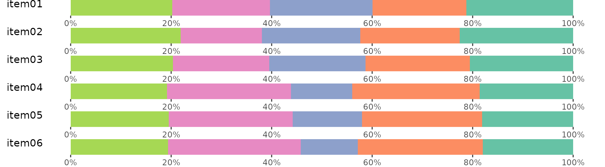

Examples
Examples.RmdBounded-continuous Response Model
head(continuous_data)## v1 v2 v3 v4 v5
## [1,] 0.4379577 0.5543402 0.42007325 0.05193340 0.13475120
## [2,] 0.6151438 0.5512465 0.33395424 0.65493079 0.59117841
## [3,] 0.4553825 0.1865655 0.15766805 0.07710646 0.02070261
## [4,] 0.6987440 0.8999506 0.95195628 0.79046578 0.92697084
## [5,] 0.5844715 0.5854973 0.64820894 0.52470472 0.68358525
## [6,] 0.4195393 0.5064547 0.09878155 0.12388480 0.14388044
fit_continuous <- efa_cont(data = continuous_data, dimension = 1)
formula_string <- "
f1 ~ v1 + v2 + v3 + v4 + v5 # factor structure
v1.nu == v2.nu # equal values
v1.f1 <- 1 # fix parameter
"
fit_continuous <- cfa_cont(formula = formula_string, data = continuous_data)Discretized Response Model
head(categorical_data)## v1 v2 v3 v4 v5 v6
## [1,] 3 2 4 3 4 3
## [2,] 4 2 5 4 2 3
## [3,] 2 2 1 3 2 2
## [4,] 3 4 5 4 4 5
## [5,] 3 3 3 1 3 4
## [6,] 2 2 2 2 4 1
t_sd <- t_prior_sd(200,5)
fit_categorical <- efa_drm(data = categorical_data, dimension = 1, t_prior = t_sd)
formula_string <- "
f1 ~ v1 + v2 + v3 + v4 + v5 + v6 # factor structure
v1.nu == v2.nu # equal values
v1.f1 <- 0.7 # fix parameter
"
fit_categorical <- cfa_drm(formula = formula_string, data = categorical_data)Estimated Parameters
fit_categorical$par_est## [[1]]
## f1 c
## v1 0.7000000 0.03268369
## v2 0.6124673 -0.05295517
## v3 0.8107827 0.01414367
## v4 0.6427451 0.03352238
## v5 0.7171871 0.04254146
## v6 0.6809082 0.05591179
##
## [[2]]
## nu t1 t2 t3 t4
## v1 7.905651 -0.04083870 0.006740999 -0.08019118 0.04723286
## v2 7.905651 -0.29912536 -0.111784075 -0.10036772 0.03149359
## v3 7.973343 -0.06138573 -0.058972869 0.01844436 0.01080422
## v4 7.192069 0.25131759 -0.453184411 0.28162322 -0.03170281
## v5 6.761288 0.23526896 -0.346481851 0.20364775 -0.07440306
## v6 7.711653 0.31170633 -0.538808670 0.25059122 -0.07338741Estimated Category Thresholds
Items 4–6 have been designed to have narrow middle categories.
plot(fit_categorical)